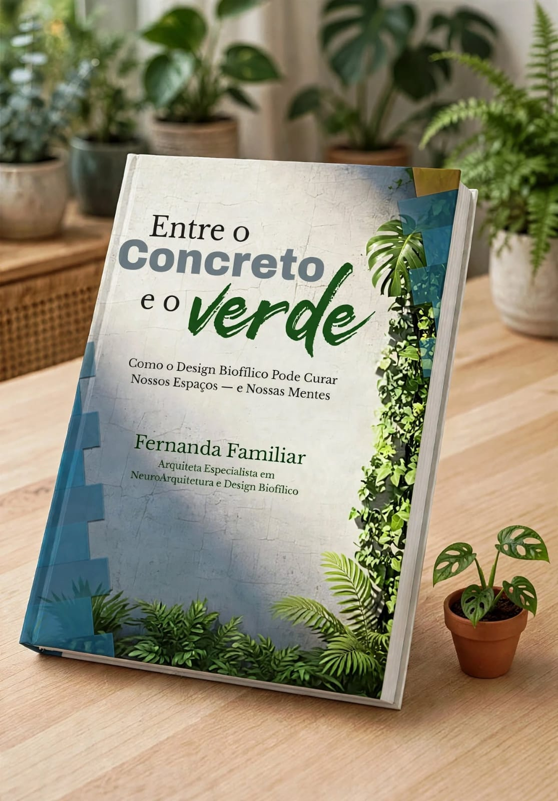
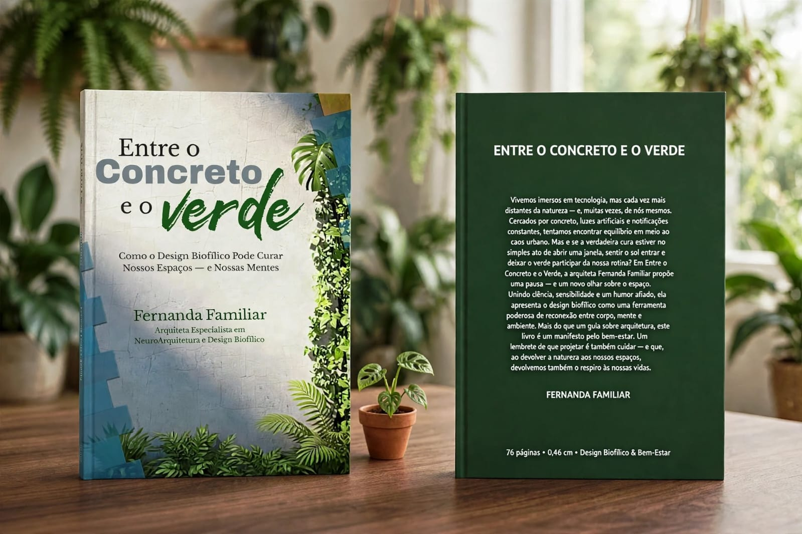
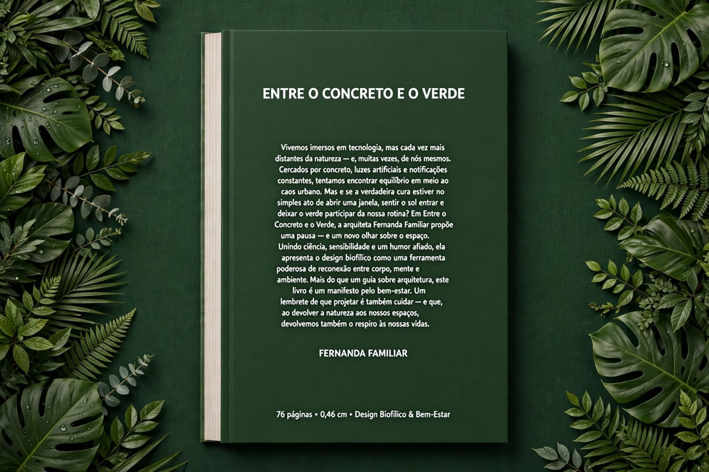

Entre o Concreto e o verde
Como o Design Biofílico Pode Curar Nossos Espaços — e Nossas Mentes
E se o bem-estar que você procura começasse pelo lugar onde você vive?
A gente passa a vida construindo casas, prédios e cidades. Aprende a escolher revestimentos, móveis, cores e iluminação. Mas, no meio de tantas escolhas, às vezes esquece de uma coisa essencial: nós também somos natureza.
Em Entre o Concreto e o Verde, convido você a olhar de novo para os espaços que habita — e a descobrir como a presença da natureza pode transformar a maneira como vivemos, sentimos e nos relacionamos com o mundo à nossa volta.
Um livro sobre arquitetura, design biofílico e, principalmente, sobre nós.

Será que você também sente isso?
Você acorda, olha o celular, começa o dia e entra na correria.
- Luz artificial.
- Paredes.
- Telas.
- Barulho.
- Notificações.
- Mais uma tarefa.
- Mais uma reunião.
- Mais um dia tentando dar conta de tudo.
E, quando o cansaço chega, a gente procura maneiras de desacelerar. Baixa um aplicativo, tenta meditar, planeja uma viagem para algum lugar cercado de verde.
Mas e se parte dessa reconexão pudesse começar nos espaços em que você já vive, trabalha, estuda e passa boa parte da vida?
E se a arquitetura pudesse fazer mais do que organizar paredes, acomodar móveis e deixar tudo bonito?
E se os espaços também pudessem cuidar de quem os habita?
Essa é uma das perguntas que me levaram a escrever este livro.
A descoberta
Não, design biofílico não é só colocar plantas na sala.
Vamos começar desfazendo uma confusão? Ter plantas em casa é maravilhoso. Mas o design biofílico vai muito além delas.
É uma abordagem de projeto que busca restabelecer a conexão entre as pessoas e a natureza nos ambientes construídos.
Isso envolve:
- a luz que entra pela janela
- o ar que circula
- os materiais que tocamos
- os sons que ouvimos
- as formas que nos cercam
- as vistas que alcançamos
- as experiências que um espaço nos proporciona
Porque um ambiente não é apenas aquilo que a gente vê.
É também aquilo que sente quando está nele.
A natureza não precisa ficar do lado de fora enquanto a vida acontece aqui dentro.
E não, não precisamos abandonar as cidades, morar no meio da floresta ou transformar a sala em uma selva para recuperar essa conexão.
Precisamos aprender a projetar de outra maneira.
É sobre isso que você vai encontrar nas páginas de Entre o Concreto e o Verde.
O livro
Uma nova maneira de olhar para os espaços
Este não é um convite para sair comprando plantas sem saber onde colocá-las. É um convite para compreender o que existe por trás de um ambiente que acolhe, inspira e favorece o bem-estar.

Ao longo do livro, você vai descobrir:
- O que é biofilia e por que nossa conexão com a natureza é tão importante.
- Como funciona o design biofílico, para além da estética e das tendências de decoração.
- Quais princípios orientam essa abordagem, incluindo as experiências diretas e indiretas com a natureza e as características dos espaços.
- Como luz natural, ventilação, materiais, texturas, sons, formas e outros elementos participam da experiência de um ambiente.
- Como levar esse conhecimento para a prática, tanto em projetos profissionais quanto nos espaços da vida cotidiana.
- Como começar a transformar os ambientes ao seu redor, com um checklist dos dez princípios do design biofílico.
Tudo isso com referências, exemplos, embasamento científico, leveza e aquele humor que aparece quando a gente começa a perceber algumas contradições da vida moderna.
Para quem é este livro?
Para quem habita algum lugar.
-
Para quem projeta espaços e quer ir além da aparência.
-
Para arquitetos, designers, estudantes e profissionais que desejam compreender melhor a relação entre ambiente, natureza e experiência humana.
-
Para quem se interessa por arquitetura, decoração e bem-estar, mas quer entender o que existe por trás de um espaço que faz a gente se sentir bem.
-
E para você que talvez nunca tenha ouvido falar em design biofílico, mas já percebeu que existe algo diferente na sensação de estar perto do mar, caminhar entre árvores, sentir o sol no rosto ou abrir a janela depois de horas dentro de casa.
Você não precisa ser arquiteto para se reconhecer neste livro. Basta habitar algum lugar — e querer entender como esse lugar participa da sua vida.
Sobre a autora
Fernanda Familiar
Arquiteta e urbanista · Especialista em NeuroArquitetura e Design Biofílico
Fernanda Familiar é arquiteta e urbanista apaixonada por pessoas, plantas e projetos que unem beleza e propósito. Especialista em neuroarquitetura e design biofílico, acredita que espaços bem projetados podem transformar o humor, a saúde e até a forma como vivemos o cotidiano.
Entre uma planta nova e um café forte, escreve, projeta e inspira outros profissionais a criarem ambientes mais humanos, vivos e conectados à natureza.
A natureza não deixou de fazer parte de nós. Nós é que, muitas vezes, deixamos de percebê-la.
Talvez você nunca mais olhe para uma janela da mesma maneira.
Talvez comece a prestar atenção na luz que entra pela manhã, no ar que circula, nos materiais que escolhe e na sensação que determinado lugar desperta em você.
Talvez descubra que projetar, reformar ou simplesmente habitar um espaço pode envolver perguntas muito maiores do que “ficou bonito?”
Foi esse olhar que me levou a escrever Entre o Concreto e o Verde. Agora, quero convidar você a fazer essa descoberta comigo.
Porque a arquitetura não serve apenas para abrigar. Ela também pode cuidar.
E a natureza tem muito a nos ensinar sobre isso.
Entre o Concreto e o Verde · Como o Design Biofílico Pode Curar Nossos Espaços — e Nossas Mentes

Ficha do livro
Onde comprar
- Formato
- Livro físico e digital
- Páginas
- 76
- Dimensões
- 14,81 × 0,46 × 21,01 cm
- Tema
- Design Biofílico & Bem-Estar
- Autora
- Fernanda Familiar